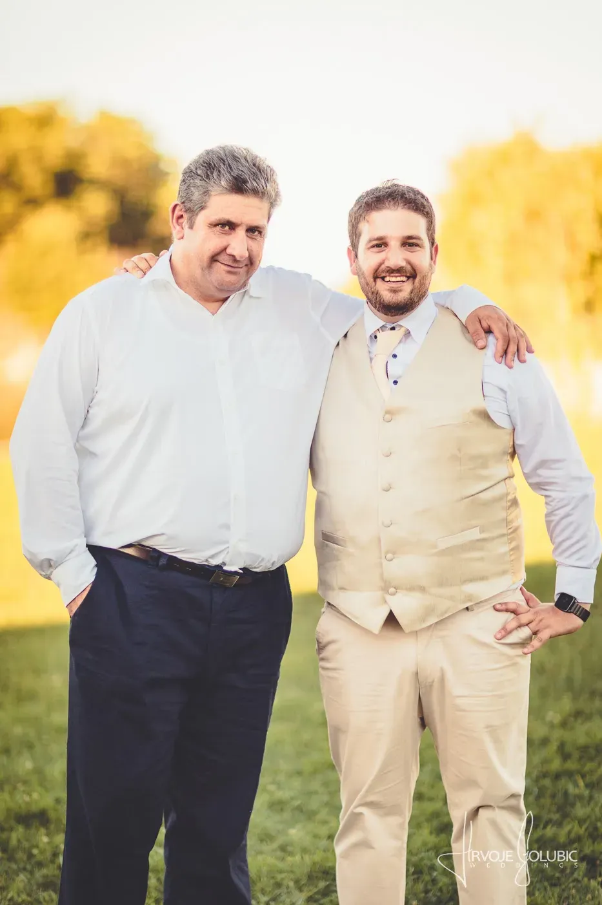

Priča o osnivanju
Kako sam postao Zagorski Zet

I arrived in Croatia knowing no one and speaking no Croatian. The person who changed that — who changed everything — was Davor Kolarić. Davor ran Konoba Ankora in Kustošija. Our family came from Zagorje, and he ran his birtija the only way that counts — your drink before your coat came off, regulars on their stools, strangers leaving as friends. He was my father-in-law, but never once made me feel like a foreigner.
They called him Medo — Bear — and he earned it. Over countless evenings he taught me how a real Zagorac lives: spek, wine, rakija, how to fill a room and send everyone home happy. And how to order a gemišt — not the tourist 50/50. Prst prst. Two fingers. Wine on top, just enough water.
Davor passed away from lung cancer. I miss him every day. If he were here for ZaZet Solutions, two gemišts would be on the counter before I opened my mouth. In our family I was the Zagorski Zet — the Zagorje son-in-law — and ZaZet is the name this company was always going to carry. On every project I try to bring what he brought to everyone who walked into that birtija: make them feel at home, earn their trust, and do it right — not the tourist version.
🕯️ In memory of Davor Kolarić